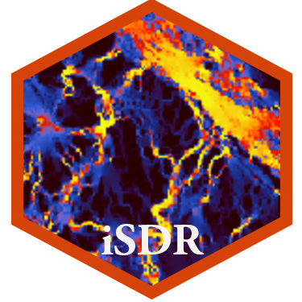

Intro to Spatial Data in R
Use R to load, visualize, and analyze spatial data

Instructor
- Dr. Matt Williamson
- 4123 Environmental Research Building
- mattwilliamson@boisestate.edu
- MwilliamsonMatt
- Schedule an appointment
Course details
- Mondays and Wednesdays
- August 21–December 13, 2023
- 1:30–2:45 PM
- Mathematics 126
- Slack
Contacting me
E-mail and Slack are the best ways to get in contact with me. I will try to respond to all course-related e-mails and Slack messages within 48 hours (really), but also remember that life can be busy and chaotic for everyone (including me!), so if I don’t respond right away, don’t worry!